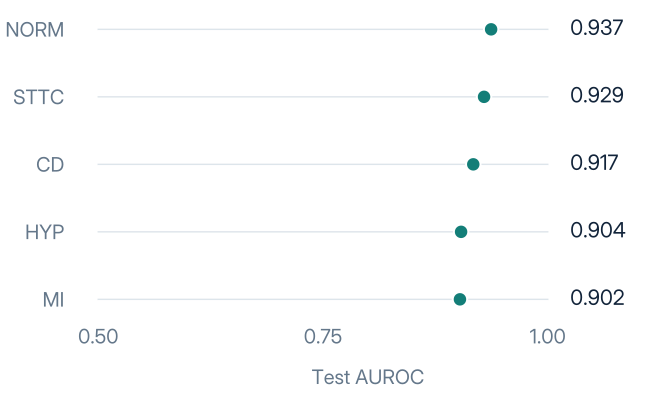
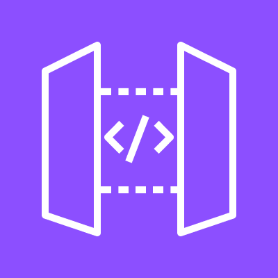
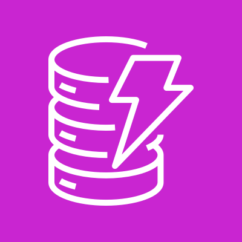

MY CONTRIBUTION
My role & engineering decisions
AI / ML & Cloud Engineering · End-to-end delivery with AI-assisted tooling.
- Model development
- Trained and evaluated the PyTorch ECG model using patient-safe PTB-XL folds.
- AWS architecture
- Defined Terraform infrastructure, scoped IAM roles and private processing boundaries.
- Application integration
- Connected Cognito, asynchronous inference, validated summaries and persisted human review.
- Validation & operations
- Verified browser flows, metrics, SQL exports and scoped teardown recovery.
A public record. A traceable run.
From signal to review.
- 01 — Select an ECG
- 02 — Run inference
- 03 — Review the result
Actual UI crops, enlarged with a uniform exposure adjustment. Values and states are unchanged. Select an image to inspect its source crop.
The workflow in motion.
25 seconds / product cut · Original sound designWatch the extended 45-second showcase
The extended version is silent.
Edited from actual screenshots and records. Not a continuous live deployment recording. Original sound design; no voiceover.
Measured on held-out data.
Independent PTB-XL test set
2,158 records

| Class | AUROC |
|---|---|
| NORM | 0.937 |
| STTC | 0.929 |
| CD | 0.917 |
| HYP | 0.904 |
| MI | 0.902 |
- Public ECG dataPTB-XL v1.0.3
- PyTorch modelPatient-safe partitions
- Versioned artifactReproducible checkpoint
- AWS inferenceSageMaker CPU
A system, end to end.
Identity, bounded processing, inference and a review that persists.
Frontend & Identity
Web + sign-in
 CloudFront
CloudFront- Cognito / PKCE

API Gateway
Private Processing
Bounded jobs
 Lambda
Lambda- Step Functions
ML & Generative AI
Model + summary
 SageMaker CPU
SageMaker CPU- Bedrock + checks
Persistence & Analytics
Review + retain

DynamoDB S3 / Parquet
S3 / Parquet Athena
Athena
Human review stays in the loop.
Explore the technical diagram ↗
Processing uses private subnets and service endpoints. Managed services are shown logically, not as resources hosted inside the VPC.
Proof across the lifecycle.
- AWS deployed
- Real infrastructure validated in eu-west-3.
- 80 checks
- Local verification passed.
- 6/6 cleared
- Scoped post-teardown audit.
"cloud_validation_passed": trueaws-cleanup-audit.json ↗"all_clear": trueCodeBuild · ECR · SageMaker · Athena
Built.
Validated.
Safely decommissioned.
Evidence retained. Infrastructure retired.
A DECISION THAT MATTERS
Validate before display.
- Strict Bedrock checksReject generated output that fails the schema or evidence checks.
- Deterministic fallbackReturn an explicit, traceable summary when validation fails.
- Required human reviewKeep the final decision with the reviewer and persist the result.
Observed in the AWS demonstration: Bedrock was invoked, its output was rejected, the labelled fallback was shown and human review was recorded.
- Model training
- AWS deployment
- Validation
- Evidence collection
- Teardown audit
Research prototype. Not intended for clinical diagnosis.
Technical notes, evidence and limitations
The PyTorch model was trained locally on an NVIDIA RTX 4060. Official patient-safe PTB-XL folds were used for training, validation and independent testing. The rounded headline comes from test macro AUROC 0.9178536552.
Cognito authorization-code sign-in with PKCE, real CPU inference on SageMaker and a human review persisted in DynamoDB were verified in the browser. Bedrock was invoked, but generated output failed strict validation; the labelled deterministic fallback was used. Parquet output was queried with Athena.
Final teardown required recovery after generated SageMaker lineage associations blocked the original cleanup. The scoped recovery inspected ownership and incoming/outgoing associations before deletion. The final audit on 29 October found all six application/guardian states empty and no project resources or discovery errors within its scope. This was not a claim that the initial teardown was flawless.
- No clinical validation; one-AZ demonstration.
- Three HIGH ECR image findings remained for remediation before production.
- Cross-user ownership used IAM invocation with two Cognito subjects, not two browser JWT sessions.
- No load/SLO testing or model update/rollback validation.
- Cleanup is a scoped audit, not a guaranteed monetary cap. Available AWS credits are not treated as project cost.
Public evidence files are allowlisted derivatives. Account identifiers, resource names, endpoints, Cognito client identifiers and billing information are excluded. Raw evidence remains private.